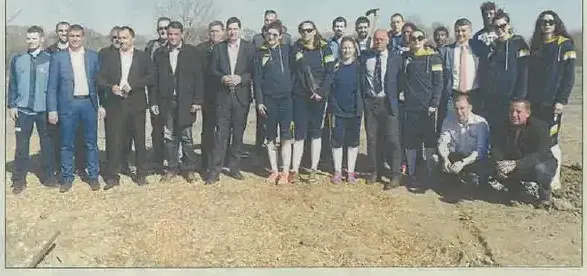
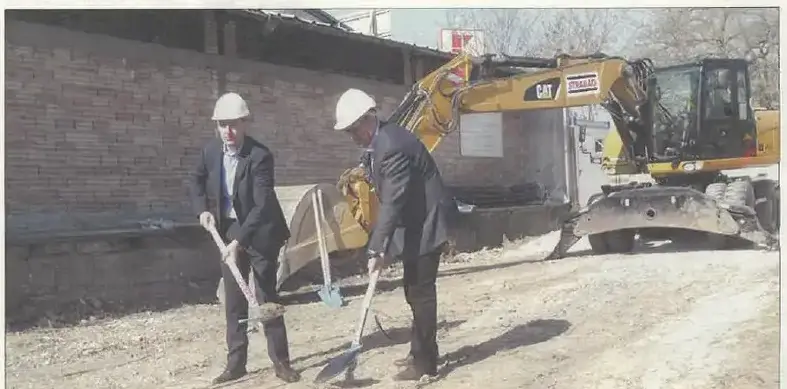
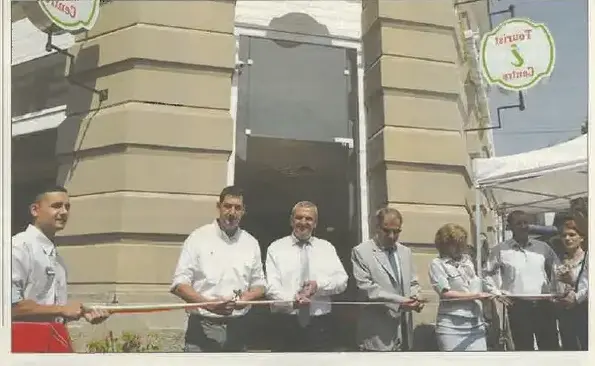
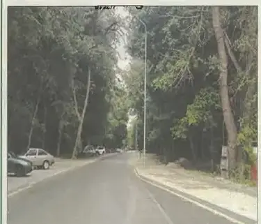
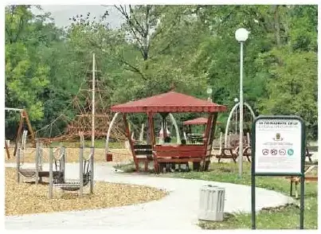
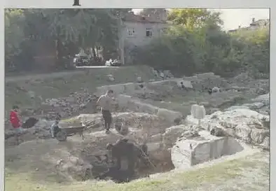
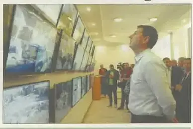

2017 — „Златната ябълка“ и джунглата в музея
Светът забеляза: наградата на FIJET, залата „Тропик“, Клианти отвори врати.
Трите акцента на годината · подбрани на ръка
Световните туристически журналисти избраха Пловдив.
подробностите — на мястото им →Перлата на Стария град, отворена след реставрацията на стенописите и таваните с варак.
подробностите — на мястото им →Джунглата в Природонаучния — по пътя към първия 3D планетариум в България.
подробностите — на мястото им →Хрониката на годината · месец по месец · 24 записа: 10 събития от вестника · 14 броя
Всичко на едно място, по реда на случването. Щракни албум — разгъва се тук, без да напускаш годината. Събитията от общинския вестник отварят страницата-източник в четеца. Записите от вестника са подбраните — кадрите и текстовете им предстои да бъдат подменени с по-добри, а някои ще се слеят с разказите по темите.
 8 стр. · чети
8 стр. · чети139 години от Освобождението на града · Тригодишна програма реформира образованието в общината · Бюджетът на Пловдив с 20 милиона отгоре
кликни — броят се отваря в четеца · всички броеве са в секция „Вестникът“ → 8 стр. · чети
8 стр. · четиРекорд – районите с 9 милиона за паркове и улици · Пловдив опроверга твърдението, че у нас няма производство · Пловдив кандидатства с Голямата базилика пред ЮНЕСКО
кликни — броят се отваря в четеца · всички броеве са в секция „Вестникът“ → 8 стр. · чети
8 стр. · четиПловдив променя облика си с грижа за историческото наследство · Инвестициите в старини и археология привличат все повече туристи в най-стария жив град в Европа
кликни — броят се отваря в четеца · всички броеве са в секция „Вестникът“ →
стр. 4Нови 100 чинара и бряста бяха засадени в парк „Лаута“, който увеличи площта си с 65 декара. Новозасадените дървета през последните години станаха над 2000, а кметът Иван Тотев подчерта, че на това място няма да има строителство, а парк.
брой 23 · стр. 4 — отвори страницата →Кметът Иван Тотев и районният кмет Димитър Колев засадиха елха в „Акациева горичка“ – най-новият парк в Пловдив, разположен на 5 декара до бул. „Пещерско шосе“. Изградени са алеи с цветна фигура, осветление, нова детска площадка, фитнес на открито, чешмичка и голяма беседка.
брой 23 · стр. 6 · и в Марица ГРАДЪТ · юли 2017 — отвори страницата → 8 стр. · чети
8 стр. · четиПловдив център на социалната икономика · Пловдив с първи дигитален център · Внедряване на умни системи в Пловдив – пътят на един умен град
кликни — броят се отваря в четеца · всички броеве са в секция „Вестникът“ →
стр. 4Кметът Иван Тотев направи символичната първа копка на булевард „Северен“ откъм „Брезовско шосе“ – първият изцяло нов булевард в града от 18 години насам. Трасето е част от вътрешния транспортен ринг и ще разтовари трафика по бул. „Цар Борис III Обединител“.
брой 24 · стр. 4 — отвори страницата → 8 стр. · чети
8 стр. · четиВисящи кошници с цветя отново красят Пловдив · Център по биология в Пловдив – наука на световно ниво · Тръгна „Северен“ – чисто нов булевард в града след 18 години
кликни — броят се отваря в четеца · всички броеве са в секция „Вестникът“ →През май беше сформирана работна група, която започна да подготвя план за действие за създаването на най-големия зелен масив в Пловдив — 650 декара от западната страна на Гребния канал. Община Пловдив взе решение да възложи задачата чрез инженеринг — проектиране и изпълнение, като на мястото на пустата крайградска зона ще се появи прекрасен парк за отдих.
Марица ГРАДЪТ · юли 2017 · стр. 5 — отвори страницата → 8 стр. · чети
8 стр. · четиПо-добър въздух над Пловдив с европейски пари · Голяма красота е Пловдив – ще е във фокуса на цяла Европа · Арт град – кой друг, ако не Пловдив!
кликни — броят се отваря в четеца · всички броеве са в секция „Вестникът“ →На 7 юни отвори врати новият туристически информационен център на ул. „Райко Даскалов“ №1, който само за два месеца посрещна повече от 6300 посетители. Заедно с центъра на пл. „Централен“ той отчете 80 процента ръст на обслужените туристи, като 78% от тях са чужденци.
брой 28 · стр. 3 — отвори страницата →
стр. 3На мястото на легендарната книжарница „Отец Паисий“ на Джумаята бе открит най-модерният туристически център в страната с дизайнерско оформление и дигитални монитори. Кметът Иван Тотев присъства на откриването и подчерта, че с ремонтите в „Капана“ и на Римския стадион зоната връща ролята си на исторически център.
брой 26 · стр. 3 — отвори страницата →
стр. 7Ремонтът на продължението на булевард „6 септември“ до Гребната база приключи и движението по участъка от булевард „Свобода“ до улица „Рая“ бе пуснато. Отсечката с новия асфалт е 1250 метра, изградени са нови широки тротоари, осветление и джобове на спирките на градския транспорт.
брой 26 · стр. 7 — отвори страницата → 8 стр. · чети
8 стр. · четиПосланици от цял свят в Пловдив · Лаута расте с нова алея – 310 метра · Градът по-цветен с 3 милиона цветя
кликни — броят се отваря в четеца · всички броеве са в секция „Вестникът“ →
стр. 8Розариумът, любимо място на няколко поколения пловдивчани, беше обновен — възстановено е осветлението, поставени са пейки, беседки, чешма и барбекюта, а зелените площи са изцяло възстановени. Зад Братската могила са изградени две детски площадки с 18 съоръжения за игра, игрище за волейбол и кътове за отдих с маси за шах и табла.
Марица ГРАДЪТ · юли 2017 · стр. 8 — отвори страницата → 8 стр. · чети
8 стр. · четиНаграда „Учител за пример“ в общинската стратегия за образование · Пловдив готви културна програма за министрите на ЕС · 700 000 лева за проекти – градът търси поредна промяна
кликни — броят се отваря в четеца · всички броеве са в секция „Вестникът“ → 8 стр. · чети
8 стр. · четиГрадските паркове и градини се превърнаха в любими места за отдих
кликни — броят се отваря в четеца · всички броеве са в секция „Вестникът“ → 8 стр. · чети
8 стр. · четиФеерия от цветове и ритми за 23-и път · Асеновградско шосе като магистрала – с четири платна · Пловдив е зелен и цветен – водеща политика на общината
кликни — броят се отваря в четеца · всички броеве са в секция „Вестникът“ → 8 стр. · чети
8 стр. · четиПловдив отново е символ на промяната 132 години след Съединението · Световната банка и „Гугъл“ на форум в Пловдив · Общината подава ръка на самотните възрастни пловдивчани
кликни — броят се отваря в четеца · всички броеве са в секция „Вестникът“ →
стр. 4Пловдив е решен да отвори Източната порта на Филипопол в целия и блясък, след като общината получи от Министерския съвет правото да управлява археологическия комплекс за срок от 10 години. Разкопките, ръководени от Мая Мартинова, вече започнаха, а порталът ще стане атрактивен елемент от градския туристически маршрут с нов информационен център и къща край обекта, закупена от общината.
брой 30 · стр. 4 — отвори страницата →
стр. 4Кметът Иван Тотев откри обновения оперативен център на ОП „Общинска охрана“, в който е събрана цялата видеокартина на централната градска част. Камерите покриват 150 точки в града, като броят им ще стигне 400, центърът работи 24 часа, а общинските служители са в директна връзка с ОД МВР.
брой 30 · стр. 4 — отвори страницата → 8 стр. · чети
8 стр. · четиТръгва мега проектът за 225 милиона с пробив под Централна гара · Пловдив посреща 200 експерти на образователен форум · Наплив на чужденци към Пловдив – с 15 процента повече
кликни — броят се отваря в четеца · всички броеве са в секция „Вестникът“ → 8 стр. · чети
8 стр. · четиГолямата базилика с аплодисменти в Париж · Най-голямата ледена пързалка на Балканите е тук · Реставрират Жълтото училище за 190 дни
кликни — броят се отваря в четеца · всички броеве са в секция „Вестникът“ → 8 стр. · чети
8 стр. · четиПловдивски училища в облака на финала за иновации · Бизнесът в Пловдив с инвестиции за милиони и хиляди работни места · Знатни родове превърнаха Пловдив в български град
кликни — броят се отваря в четеца · всички броеве са в секция „Вестникът“ →